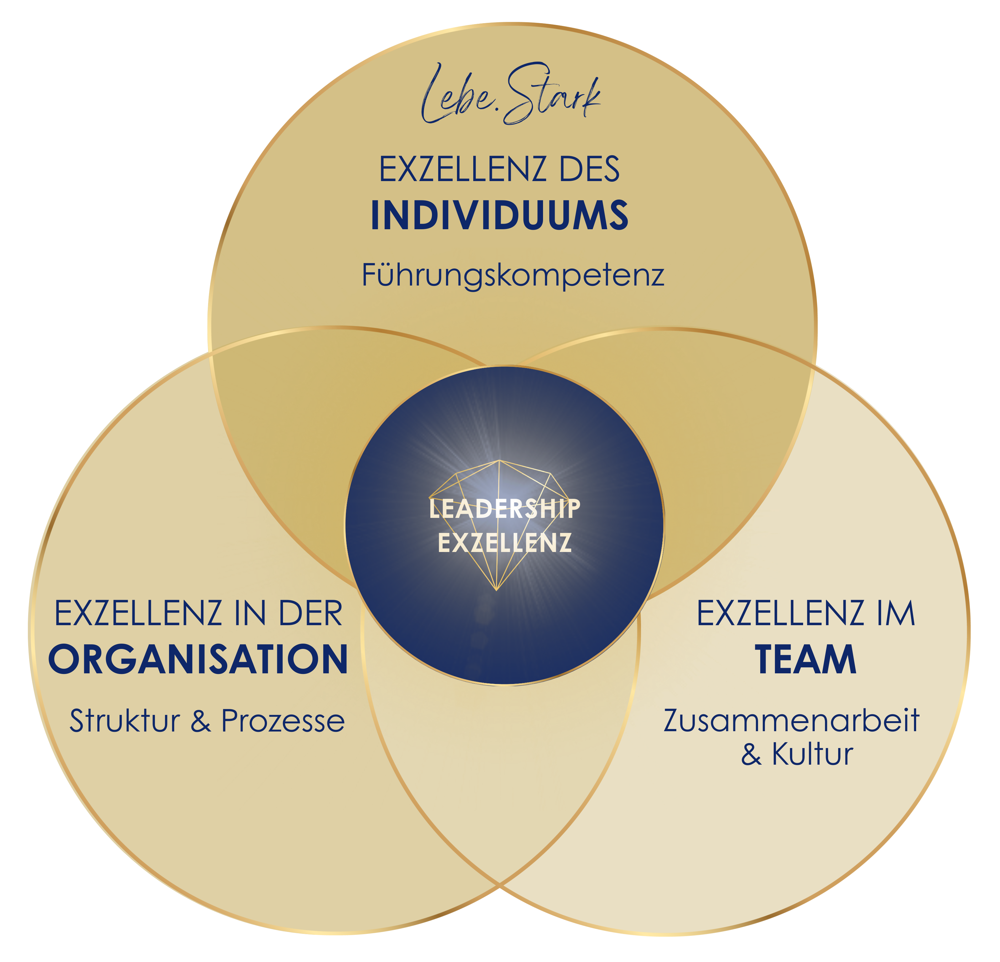

Herzlich Willkommen bei Leadership Solutions
Erfahrung trifft auf Empathie & Umsetzungskompetenz

Mentorin, Coach und Beraterin f√ºr F√ºhrungskr√§fte: 20 Jahre+ Konzernerfahrung, mit üíõ und Verstand zum Erfolg.
Mein Leistungsspektrum
Die Ausgestaltung meiner Leistungen erfolgt stets maßgeschneidert, mit Fokus auf die individuellen Bedürfnisse der Person, die Dynamik des Teams und den größtmöglichen Nutzen für Ihre Organisation.

EXZELLENZ IN DER ORGANISATION
- Beratung und Begleitung bei Transformationsprojekten (z. B. Einführung neuer Systeme oder Prozesse)
- Prozessoptimierung & Strukturanalyse: Effizienz steigern und klare Verantwortlichkeiten schaffen
- Strategische Finanzkompetenz: Transparenz in Zahlen, Reporting und Steuerungsinstrumenten
- Change-Management: Mitarbeiter aktiv mitnehmen, Widerstände lösen, Akzeptanz schaffen
Beispiele für Organsiation bzw. Teamführung:
1. Beratung & Begleitung bei Transformationsprozessen(Einführung neuer Systeme oder Prozesse)
Beispiel: Ein Unternehmen führt ein neues Finanzbuchhaltungs-System ein. Viele Mitarbeitende sind skeptisch ("das alte System funktioniert doch eh!").
Manche habne Angst, dass sie die neue Softwäre nicht beherrschen werden.
Führungsaufgabe:
Kommunikation: Warum das neue System eingeführt wird, welchen Nutzen es für das Team bringt (zB. weniger Doppelerfassungen, mehr Auswertungsmöglichkeiten, mehr Transparenz, weniger manuelle Arbeit, weniger Abstimmungen.)
2. Prozessoptimierung & Strukturanalyse
(Effizienz steigern, klare Verantwortlichkeiten schaffen)
Beispiel: Zwei Mitarbeitende bearbeiten Buchhaltungen.
Oft werden gleiche Sachverhalte doppelt recherchiert, manchmal kommt zu unterschiedlichen Ergebnissen, es gibt keine einheitliche Vorgehensweise.
Führungsaufgabe:
Prozesse visualisieren und klare Zuständigkeiten definieren.
3. Strategische Finanzkompetenz
(Transparenz in Zahlen, Reporting und Steuerungsinstrumenten)
Beispiel: Das Team weiß nicht genau, welche Pojekte profitabel sind.
Manche Mitarbeitende arbeiten an Aufgaben, die zwar viel Zeit kosten, aber wenig Mehrwert bringen.
Führungsaufgabe:Zahlen übersetzen:
Führungskraft erklärt regelmäßig Kennzahlen in einfacher Sprache (zB. "Dieses Projekt bringt 40% unserer Einnahmen, jenes aber nur 5%".)
4. Change-Management
(Mitarbeiter aktiv mitnehmen, Widerstände lösen, Akzeptanz schaffen)
Beispiel:
Das Unternehmen forciert die Verwendung von Ki. Einige Mitarbeiter fürchten um ihren Arbeitsplatz.
Führungsaufgabe:
Frühzeitige Einbindung: bereits im Planungsstadium Rückmeldungen einholen. Transparenz geben: Ängste ansprechen ("Ich verstehe, dass Sie Sorge um Ihren Arbeitsplatz haben. Lassen Sie uns die konkreten Anwendungsfälle anschauen.")
Erfolgsgeschichten erzählen: Beispiele von anderen Teams oder Unternehmen aufzeigen, der neue Ansatz funktioniert.
Quick Wins schaffen: kleine, aber sichtbare Erfolge feiern!
Ergebnis: Mitarbeitende fühlen sich nicht überrollt, sondern beteiligt und ernst genommen!
EXZELLENZ IM TEAM
- Coaching und Moderation von Teams in Veränderungs- und Wachstumsprozessen
- Zusammenarbeit stärken: Kommunikation, Vertrauen und Teamspirit fördern
- Potenzialanalyse und Teamentwicklung: Talente sichtbar machen und optimal einsetzen
- Kultur gestalten: neue Rollenbilder und Führungsstrukturen verankern
Beispiele für Teamführung:
1. Coaching & Moderation von Teams in Veränderungs- und WachstumsprozessenBeispiel: Eine Start-up wächst von 8 auf 25 Mitarbeitende. Plötzlich reicht die "jeder macht alles"-Struktur nicht mehr, es gibt Überschneidungen und Spannungen.
Führungsaufgabe:
Externe Moderation für Worshops einsetzen: Rollen erklären, Erwartungen abgleichen.
Einzelcoachings für Schlüsselpersonen (zB. erste Teamleiter.)
Regelmäßige "Team Health Checks": Wie geht es uns im Wachstum? Wo knirscht es?
Zusammenarbeit stärken: Kommunikation, Vertrauen & Teamspirit fördern
Beispiel: In Projekten laufen Informationen über zu viele Kanäle (E-Mails, Chats, persönliche Gespräche) --> Missverständnisse und Doppelarbeit entstehen.
Führungsansatz:
Einführung eines festen Kommunikationskanals (zB. Teams oder Slack mit klaren Regeln.)
Vertrauensaufbau durch regelmäßige 1:1-Gespräche ("Wie geht's dir wirklich?")
Teamrituale etablieren: wöchentliche Stand-up-Meetings, monatliche Team-Events, kurze "Check-in"-Runden vor Sitzungen.
3. Potenzialanalyse & Teamentwicklung: Talente sichtbar machen und optimal einsetzen
Beispiel: Eine Mitarbeiterin, offiziell in der Sachbearbeitung, bringt privat viel Grafik- und Design-Know-How mit. Dieses Talent bleibt im Alltag aber ungenutzt.
Führungsansatz:
Potenzialanaysen (zB. Strengths-Finder, DISG-Modell, 360 Grad-Feedback) durchführen.
Stärken sichtbar machen und im Team transparent teilen ("Wer kann was besonders gut?").
Aufgaben an Talente anpassen: Mitarbeiterin übernimmt Präsentationsgestaltung und interne Kampagnen - die Motivation steigt, das Team profitiert.
4. Kultur gestalten: neue Rollenbilder & Führungsstrukturen verankern
Beipsiel: Ein Unternehmen wechselt von klassischer Hierarchie zu agilen Teams.
Mitarbeitende fragten sich: "Brauchen wir überhaupt noch Chefs? Wer entscheidet denn jetzt?"
Führungsansatz:
Rollenklarheit schaffen: Product Owner, Scrum Master oder Team-Lead definieren.
Vorbilder fördern: Führungskräfte installieren oder fördern, die Verwantwortung teilen und nicht kontrollen (zB. durch Micro-Management).
Neue Rituale einführen: Retrospektiven, Peer-Feedback, Entscheidungsrunden.
Kultur sichtbar machen: Werteworkshops, Leitsätze im Alltag leben ("Fehler sind Lernchancen!").
EXZELLENZ DES INDIVIDUUMS (“LEBE.STARK”)
- Leadership- und Sparrings-Coaching v.a. für Führungskräfte
- Selbstführung stärken: mentale Klarheit, Resilienz und souveräne Entscheidungsfähigkeit entwickeln
- Werte, Vision und Ziele schärfen – als Fundament für wirksame und authentische Führung
- Reflexion & Potenzialarbeit: persönliche Stärken entdecken und gezielt einsetzen
1. Leadership- & Sparrings-Coaching für Führungskräfte
Beispiel:
Eine neue Bereichsleiterin übernimmt ein Team von 20 Mitarbeitenden. Sie ist fachlich top, aber unsicher in der Führungsrolle.
Ansatz:
Sparring-Sessions: schwierige Mitarbeitergespräche üben ("Wie spreche in Konflikte an?")
Rollenspiele für Meetings, um Präsenz und Klarheit zu trainieren.
Reflexion: welche eigenen Führungsbilder prägen die Führungskraft? (zB. autoritär vs. kooperativ) - und was passt zum Unternehmen selbst?
2. Selbstführung stärken: mentale Klarheit, Resilienz & souveräne Entscheidungsfähigkeit
Beispiel:Ein Geschäftsführer jongliert mit ständigem Druck: Investoren wollen Ergebnisse sehen, Mitarbeitende brauchen Orientierung.
Er bekommt nicht genug Schlaf und wirkt gereizt. Beispiele für Exzellenz des Individuums:
Ansatz:
Achtsamkeits- und Fokusübungen in den Alltag einbauen (zB. 10-Minuten-Reflexion vor Arbeitsbeginn).
Resilienztraining: Stressoren erkennen, realistische Prioritäten setzen.
Entscheidungsroutinen entwickeln: "Welche 3 Kriterien helfen mir, in unsicheren Situationen handlungsfähig zu bleiben?"
3. Werte, Visionen & Ziele schärfen - Fundament für authentische Führung
Beispiel: Eine Teamleiterin kommuniziert ambitionierte Ziele, aber ihre Mitarbeitenden merken, dass sie selbst nicht überzeugt wirkt. Das verunsichert das Team.
Ansatz:
Wertearbeit: Die Führungskraft formuliert, was ihr wirklich wichtig ist (zB. Vertrauen, Innovation, Transparenz).
Vision entwickeln: "Was will ich mit meinem Team in 3 Jahren erreicht haben?"
Ziele ableiten, die messbar und gleichzeitig sinnstiftend sind.
Ergebnis: Die Führungskraft tritt klarer und glaubwürdiger auf, das Team folgt ihr mit mehr Motivation.
4. Reflexion & Potenzialarbeit: persönliche Stärken entdecken & einsetzen
Beispiel: Ein Manager erledigt viele operative Aufgaben, weil er glaubt, darin am Besten zu sein - sein Team kann sich dadurch aber nicht entwickeln.
Ansatz:
Persönlichkeits und Stärkenanalyse (zB. Gallup Strengths-Finder, 360-Grad-Feedback).
Reflexion: "Welche Aufgabe geben mir Energie, welche rauben mir Energie?"
Delegieren lernen: Stärken der Mitarbeitenden gezielt einsetzen, eigene Rolle stärker auf Strategie und Coaching fokussieren.
Ergebnis: mehr Entlastung, bessere Teamperformance.
✨ Bedürfnisse der Person, die Dynamik des Teams und den größtmöglichen Nutzen für Ihre Organisation stehen dabei stets im Mittelpunkt.✨
Wobei kann ich dir helfen?
Kommen dir einige dieser Gedanken bekannt vor?
- Wie gut arbeiten meine Teammitglieder wirklich zusammen?
- Gibt es unausgesprochene Konflikte in meinem Team?
- Sind alle Teammitglieder motiviert und fühlen sich wertgeschätzt?
- Gebe ich meinen Mitarbeitern genug Orientierung und Unterstützung?
- Wie kann ich sicherstellen, dass sich alle gehört und eingebunden fühlen?
- Wie kann ich mehr Eigenverantwortung fördern, ohne die Kontrolle zu verlieren?
- Wie reagiere ich, wenn Unzufriedenheit oder Unsicherheit im Team aufkommt?
Hierbei kann ich dich unterst√ºtzen üôÇ
- Ich helfe dir als Führungskraft, dich zu behaupten – ohne dass du dich verbiegen musst.
- Ich zeige dir, wie man Teams führt und motiviert – ohne ständig präsent sein zu müssen.
- Ich helfe dir, deinen eigenen Führungsstil zu finden.
- Ich zeige dir, wie Führung mit Strategie aussieht – ohne ständig „Feuer löschen“ zu müssen.
- Ich zeige dir, wie man Wandel und Transformation erfolgreich gestalten kann – damit Change-Prozesse nicht als Bedrohung wahrgenommen werden.
Erfahre mehr über mich und meine Werte